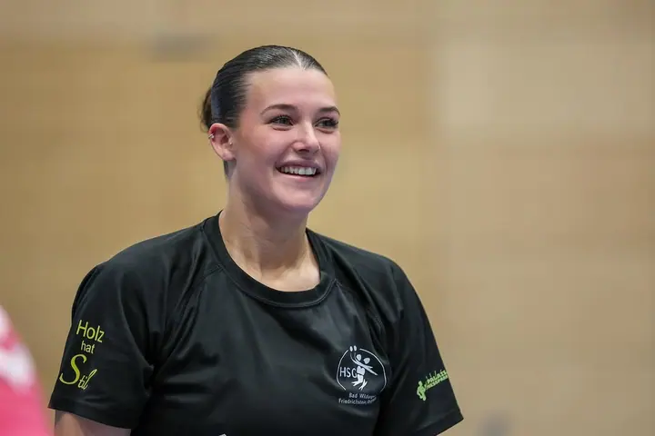
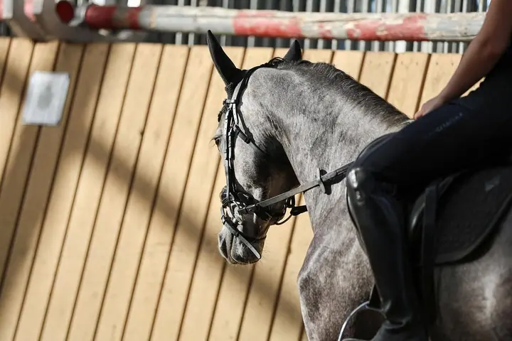
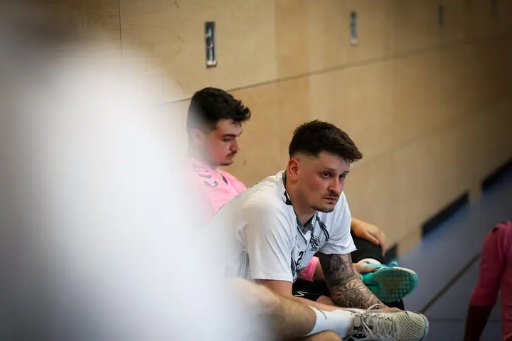
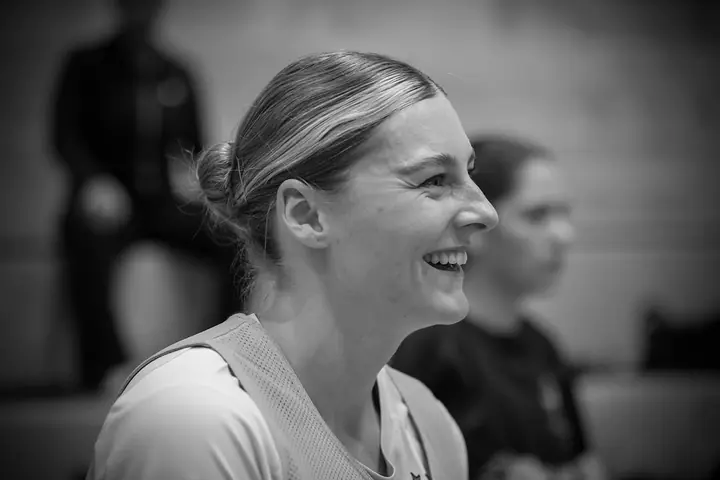
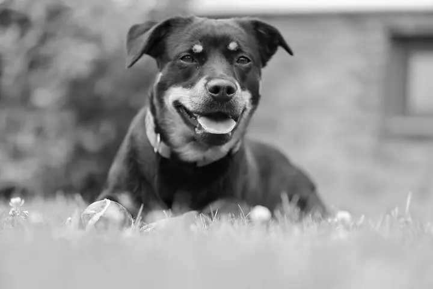
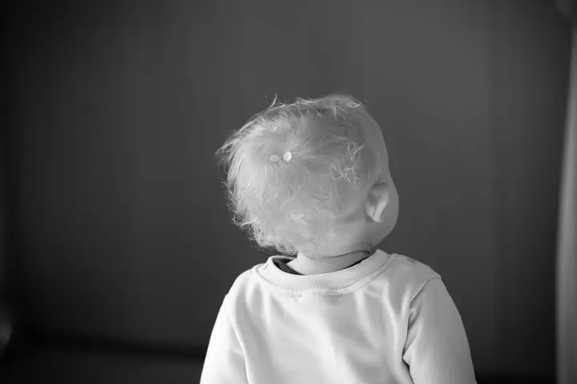
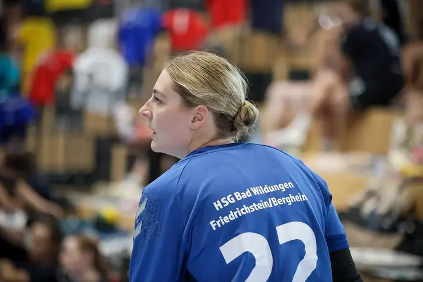
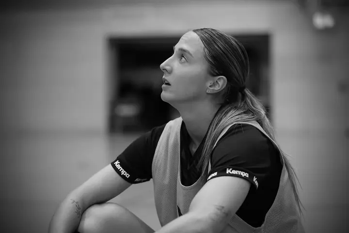
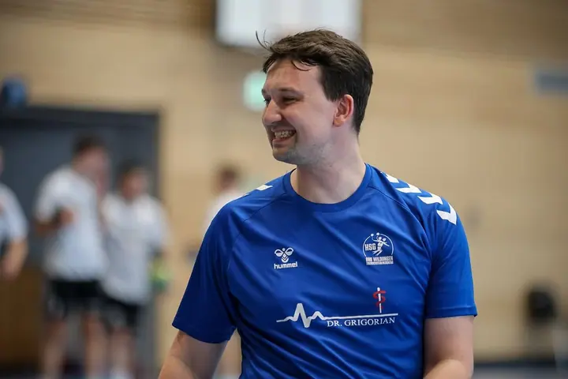

01 / 04
Sport
Fotím zápasy, tréninky i chvíle na střídačce. Nejčastěji mě potkáte v hale u házené, kde mě baví akce i emoce kolem ní.
Zeptat se na termín→








Sport, zvířata a lidé v pohybu
Zeptat se na termín →(01) Ahoj
Jmenuji se Melina Hokema a fotím sport , psy a koně i páry a rodiny . Nejčastěji mě najdete s foťákem ve sportovní hale, ale ráda vyrazím i ven na louku nebo do jízdárny.
609lidí sleduje mou práci na Instagramu
89příspěvků s fotkami a příběhy
(02) Co fotím
01 / 04
Fotím zápasy, tréninky i chvíle na střídačce. Nejčastěji mě potkáte v hale u házené, kde mě baví akce i emoce kolem ní.
Zeptat se na termín→02 / 04
Fotím psy venku na trávě i koně při jízdě v hale. Tyhle fotky mají v mém portfoliu vlastní kapitolu.
Zeptat se na termín→03 / 04
Fotím páry i celé rodiny včetně nejmenších dětí. Jde mi o přirozené chvíle, ne o strnulé pózy.
Zeptat se na termín→Dále nabízím
Fotím portréty, barevné i černobílé, s důrazem na výraz a světlo. Hodí se pro sportovce i pro kohokoli, kdo chce pěknou fotku sebe.
↗(04) Postup
Od první zprávy po hotovou galerii.
Krok 1 z 4
Stačí pár vět o tom, co chcete fotit: zápas, trénink, psa, koně nebo rodinu. A kdy a kde by se to hodilo.
Krok 2 z 4
Společně vybereme místo a čas. U sportu se přizpůsobím rozpisu zápasů, u zvířat a rodin hledáme klidné místo a dobré světlo.
Krok 3 z 4
Fotím v klidu a bez spěchu. Nemusíte pózovat, většina nejlepších snímků vznikne mezi tím.
Krok 4 z 4
Vybrané a upravené fotky dostanete v online galerii přes Picdrop, odkud si je snadno stáhnete.
Mezi dvěma akcemi se často děje to nejzajímavější
(05) Za objektivem
Nabízím focení všeho druhu. Mám ráda, když je před objektivem něco živého: hráčka těsně před střelou, pes, který se konečně na chvíli zastaví, nebo dítě, které se zrovna otočí za něčím zajímavějším.
Velkou část času trávím v hale u házené. Nefotím jen samotnou hru, ale i to, co se děje kolem ní: smích na střídačce, soustředění před zápasem, pohled k tribuně. Část fotek převádím do černobílé, protože tak víc vynikne výraz.
Ať jde o sportovní tým, vašeho psa, koně nebo rodinu, snažím se, aby fotky vypadaly přirozeně a aby se v nich lidé i zvířata poznali.
Melina
Melina Hokema · Fotografka sportu, zvířat a rodin
Nabízím focení všeho druhu. Nejčastěji sport, psy, koně, páry, rodiny a portréty.
Ano, sport je velká část mé práce. Fotím zápasy i tréninky a ráda zachytím i dění kolem hřiště.
Fotky vám pošlu v online galerii na Picdropu, odkud si je stáhnete.
Cena záleží na typu a délce focení. Napište mi, co si představujete, a pošlu vám nabídku.
(07) Kontakt
Napište pár vět o tom, co si představujete, a termín, který se vám hodí.